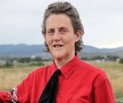
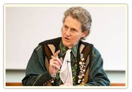

Biography
Temple Grandin was born August 29, 1947 in Boston Massachusetts. She was diagnosed with autism at the age of two and her parents sought out the best educators for her to suit her needs. Grandin earned a degree in psychology from Franklin Pierce College, a masters in animal science from Arizona State University, and a doctoral degree in animal science from the University of Illinois despite having autism and face in the challenges that come with it. She then became an advocate of sorts for people with autism with her appearance in An Anthropologist on Mars by Oliver Sack which describes how she feels in social settings and at the request by on of the founders of the Autism Society of America, spoke publicly about her experience with autism.

She is also well known for her involving animal welfare. Grandin wrote an essay entitled “Animals Are Not Things” that explains the animals are technically property but are given certain protections by the law. She also worked with animal rights with fast-food companies and slaughterhouse and advocated that the domestic animals experience a high degree of anxiety because of the lack of interaction with humans and other animals while living in facilities that will ultimately result in their death for food. In 2010, a movie was released by HBO titled Temple Grandin, a film about Grandin’s life and accomplishments despite having autism. The film won five Emmys and Claire Dane, the actress who plays Grandin in the film, won a Golden Globe for her performance in the film. Today, she is still well and alive and continues to advocate for people with autism and animal well being.